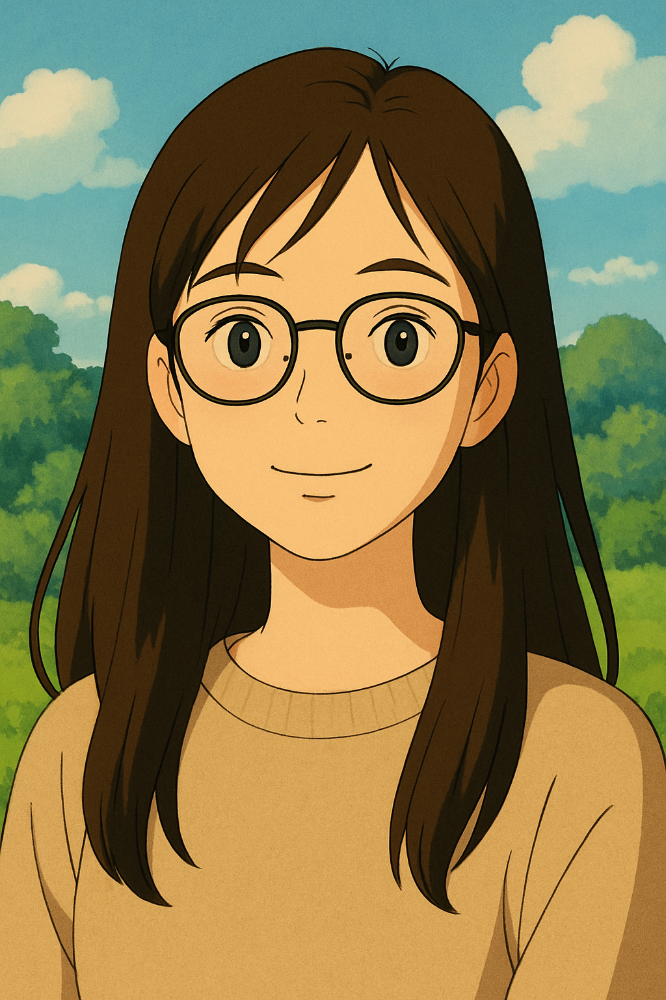

|  |
Nickname: Yor Tuổi: 17 – đủ lớn để hiểu chuyện, đủ trẻ để mơ lớn. Tính cáchnửa nghệ sĩ, nửa “chiến binh”Sở thíchNghe nhạc, đọc thơ, sưu tầm quotes để dằn mặt đời.Đi đâu cũng chụp hình, không phải sống ảo, chỉ là muốn lưu lại khoảnh khắc mình xinh đẹp. Bộ phim yêu thích Sở trườngViết văn “đâm thẳng vào tim” nhưng vẫn đủ ý.Ghi nhớ sự kiện lịch sử nhanh hơn tốc độ bạn thân đổi crush. Phân tích vấn đề xã hội sắc bén hơn cả lưỡi dao trong phim hành động. YêuNhững buổi chiều thả tâm trí vào trang sách.Cà phê sữa đá. GhétNhững định kiến kiểu “dân Xã hội thì…” – ừ thì sao? Chúng mình đa nhân cách và đa tài nhé!Ước mơTrở thành nhà báo, nhà văn, chuyên viên truyền thôngDự định tương laiTrở thành phiên bản mạnh mẽ, tự do và đẹp nhất của chính mình. |